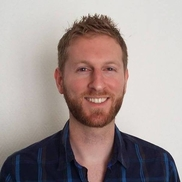

Joffrey Chassat
Développeur Java EE

Mon expérience
- De janv. 2018 à août 2019 : Secrétaire, surveillant, Université de Lille.
- Assister des étudiants en situation de handicap durant leurs examens.
- Surveiller les examens.
- De janv. 2008 à juil. 2019 : Webmaster, Aïkido Nord Club.
- Développer et administrer le site Internet de l'"Aïkido Nord Club" (HTML/CSS, PHP).
- Développer un site Internet présentant l'exposition "Une Voix pour la Paix" en partenariat avec l'Ambassade du Japon en France en 2008.
- De janv. 2010 à déc. 2018 : Traducteur et auteur, Éditions du Cénacle.
- Relecteur et correcteur de manuscrits depuis 2010.
- Auteur de Transe et gouvernement de soi et du monde selon Deguchi Onisaburô (2018).
- Traducteur de Kojiki - mythes choisis (2016).
- Auteur de "Propos sur la corruption d'un texte Zen" dans L'Éducation et l'art du sabre (2016).
- Co-traducteur de Takemusu Aiki vol.3 (2011).
- De sept. 2015 à juin 2017 : Tuteur, secrétaire, Université Charles de Gaulle-Sciences humaines, Lettres et Arts (Lille III).
- Donner des cours de soutien à des étudiants apprenant le japonais.
- Assister des étudiants en situation de handicap durant leurs examens.
- De janv. 2015 à août 2015 Professeur de français langue étrangère, Japon.
- Dispenser des cours particuliers de français à de jeunes adultes étrangers.
- De juin 2010 à août 2013 : Conseiller client confirmé, Téléperformance.
- Analyser les besoins des clients et résoudre par téléphone des problèmes liés à l'Internet, la télévision et la téléphonie fixe.
- oct. 2012 : Conférencier, Université Charles de Gaulle-Sciences humaines, Lettres et Arts (Lille III).
- Intervenir lors de la journée d'étude intitulée "D'une révolution esthétique - Réflexion sur les modalités de l'agir et ses traces entre l'Orient et l'Occident autour de l'œuvre de Ueshiba Morihei", organisée par le SUAPS de l'Université Lille 3 le 29 octobre 2012.
- Mars 2010 : Standardiste.
- Accueillir les clients et les fournisseurs.
- Gérer le standard.
- Rédiger des courriers, saisir les fiches de paie.
Mes compétences
- Java SE/Java EE, JPA Hibernate, Spring MVC
- HTML5/CSS3, Javascript
- GIT, Maven, Angular
- Agile Scrum
- Anglais (niveau B2-C1), japonais (JLPT N2)
Ma formation
- D'oct. 2019 à janv. 2020 : Formation développeur Java EE Full stack, Dawan.
- Agile scrum, UML, Maven, GIT, JPA Hibernate, Spring MVC, Javascript, Angular
- De 2015 à 2017 : Master Cultures et Sociétés parcours Études Japonaises, Université Charles de Gaulle-Sciences humaines, Lettres et Arts (Lille III).
- Mémoire de recherche, soutenu et obtenu avec les félicitations du jury, sur la pensée de Deguchi Onisaburô, fondateur d'une nouvelle religion japonaise appelée Ômoto-kyô. J'ai focalisé mes recherches sur le système de pensée de Deguchi et la notion de gouvernance qu'il développe.
- De 2014 à 2015 : Programme d'échange inter-universitaire, langue japonaise, Université de Kobe.
- Suivre des cours de langue japonaise.
- Intégrer pendant une semaine (en février 2015) le groupe religieux Ômoto-kyô à Kameoka (Kyôto) et suivre un cycle de séminaires donné par ses membres dans le cadre de mes recherches universitaires.
- De 2013 à 2014 : Licence Langues et Cultures Étrangères spécialité japonais, Université Charles de Gaulle-Sciences humaines, Lettres et Arts (Lille III)
- De 2005 à 2007 : DEUG Langues et Cultures Étrangères spécialité Japonais, Université Charles de Gaulle-Sciences humaines, Lettres et Arts (Lille III)
- De 2003 à 2005 : BTS Informatique de Gestion option développeur d'applications, Lycée Privé Saint-Joseph.
- Développer une application de gestion de l'imagerie médicale et une application de gestion des rendez-vous des chirurgiens (VB6) lors de stages au service informatique de la Fondation HOPALE (Hôpitaux) de Berck.
- Rédiger une note de synthèse et présenter mon travail devant un jury.
{kind=link}